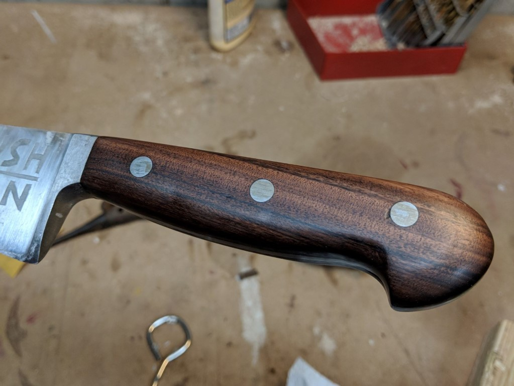
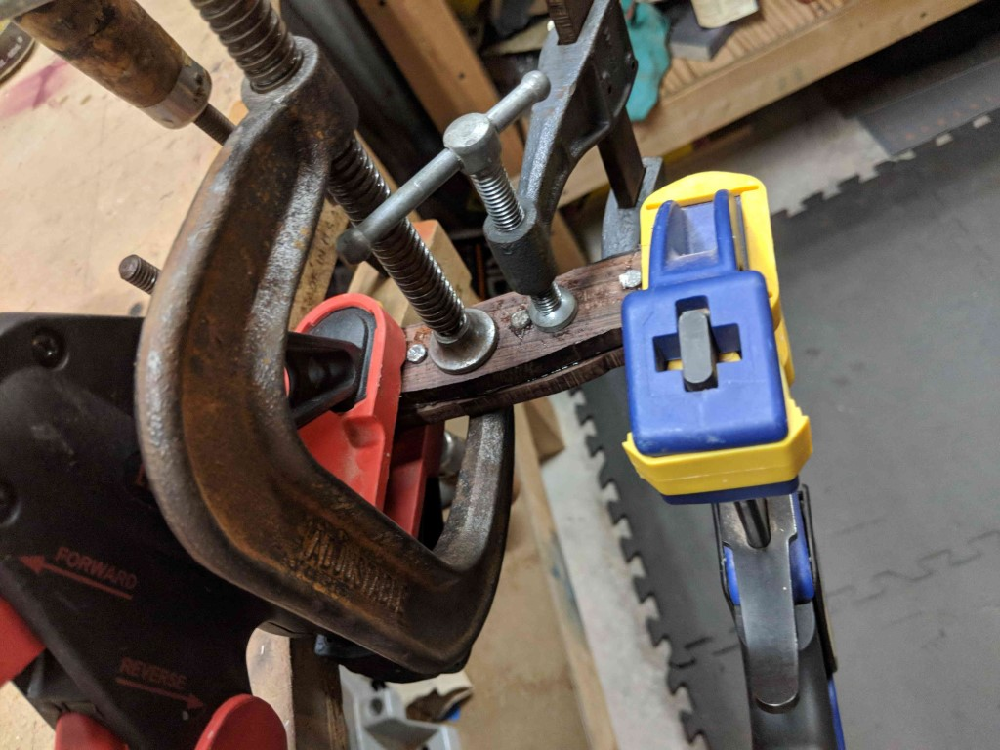
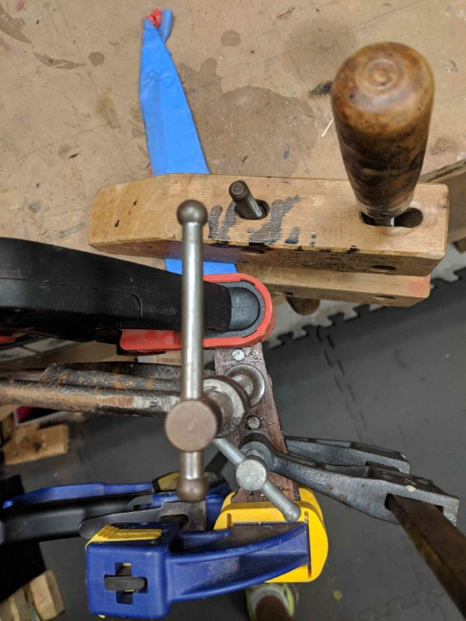
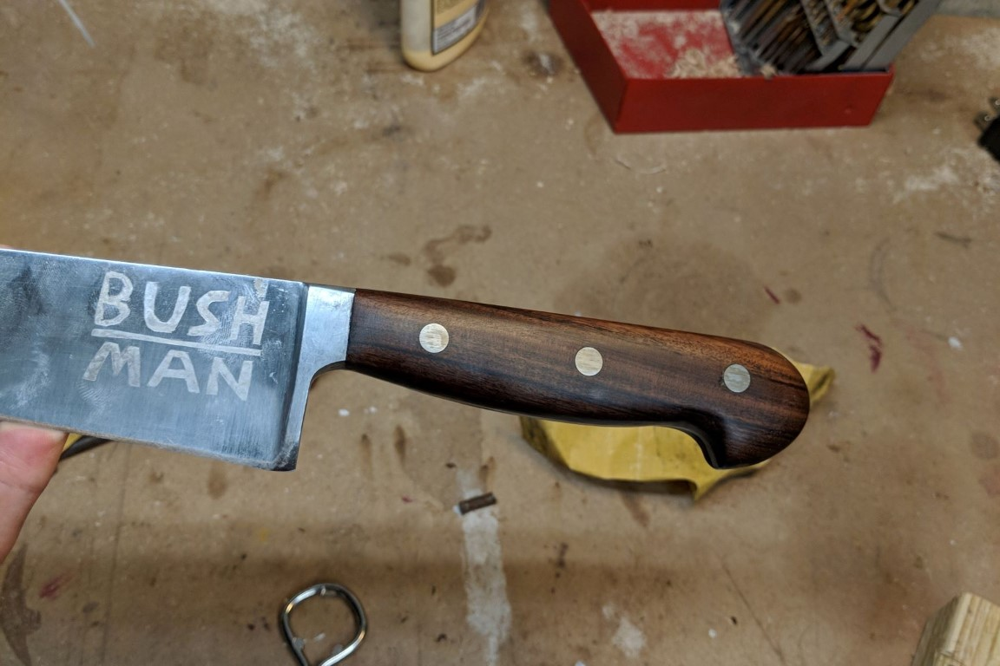
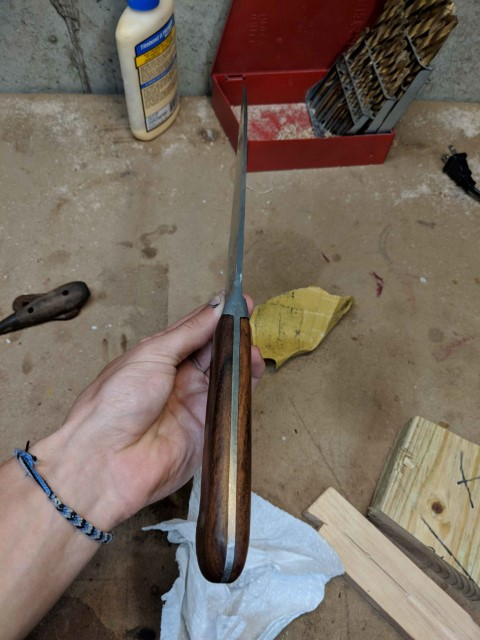
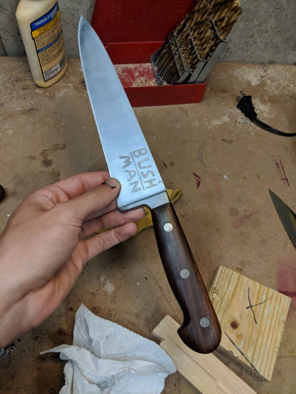

Kitchen Knife Handle
The ebony handle to my mother's large kitchen knife was starting to fall apart, and though it was not of extraordinary quality to begin with I made a simple replacement out of walnut. I also etched a simple family logo I designed into the blade.
.jpg)
This is the condition of the knife after pulling the handles off. That chipping and delamination was occurring prior to being taken apart, likely from being run through the dish washer.
Rough sawn blocks and steel through pins were glued on with epoxy, rather than riveting the handles on as would typically be done. Though the steel pins were added mainly for apperance they probably also help hold the handles together. A sintered carbide masonry bit was used to drill the holes in the hard steel handle a bit larger to accomodate the new pins. While epoxy makes it a lot easier to instal the new handles future service is basically impossible.
 The logo was added via electrochemical etching, the stencil designed by myself and cutout of painters tape to make a negative mask. Vinegar is the chemical used and is applied via a cotten soaked cotten ball which doubles as an electrode. This simple method is very effective as it seemed to remove about ten thou (estimated by eye). A vinly cutter would allow for a stencil with much sharper edges.
The handles were shaped after they were glued to the handles. This does limit how easily they can be carved down and does risk scratching the tang of the blade. The advantage of this is that don't have to carefully align the outline of the handle to the tang and the bolster.
This is the finished knife, with a coat of foodsafe wax which will also be easy to reapply to keep the handles water resistant. I like the personal touch of the etch and think that this is a nice smaller scope project before making a knife from scratch.